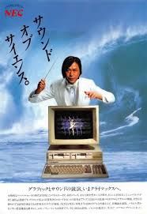
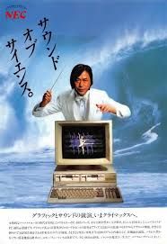

2018년 4월 25일 수요일
처음으로 나의 css 파일을 만들었다 (berlin 페이지)
근데 부트스트랩이랑 구글 폰트를 같이 쓰는게 안된다ㅠㅠ 구글 폰트에 !important 붙이면 된다던데 안되고 inline element으로 넣어도 된다던데 그것도 안되고 다 안된다!! 검색해서 해봐도 왜 안되지……
github은 파일을 올리고나서 좀 있다가 적용되는 거 같다…. 쫌 기다려봐야한다!!
드디어 google fonts overriding bootstrap을 성공했다 우와아아앙 문제해결 ㅠㅠㅠㅠ좋아
근데 맥북이랑, 샤오미 미노트4에서 페이지 색도 글씨도 너무 다르게 보인다…. 이런건 뛰어넘을수가 없는것인가
Freecodecamp
Font Awesome : 폰트 어썸인데 폰트 아니고… 아이콘 더할때 쓰는 라이브러리이다. 다운로드 하지 않고도 그냥 html에 링크만 하나 추가하면 사용할 수 있다 :) (이거 해킹하면 큰일나겠다….)
<link rel="stylesheet" href="https://cdnjs.cloudflare.com/ajax/libs/font-awesome/4.7.0/css/font-awesome.min.css"> onloadedmetadata="
이 주소를 head 안에 붙인다.예를들어
<i class="fa fa-car"> </i>
이렇게 하면 자동차 아이콘이 들어간다.fa : font awesome 이다.
오오. font awesome에는 움직이는 아이콘들도 있다. 예를 들어 로딩 !
<i class="fa fa-refresh fa-spin"> </i>
이렇게 하면 로딩하는 화살표가 돌아간다. (다른 아이콘도 회전시킬 수 있으려나? 아이콘의 크기 지정, 회전해서 넣기, 플립하기 등등 가능하다. 그리고 두 아이콘을 겹치는 것도 가능하고 색깔을 반전하는 것도 가능하고 밴(금지)아이콘을 다른 것에 겹칠 수도 있고 우왕.
font awesome은 부트스트랩과 잘 연동이 된다고 한다.
드디어 berlin 사이트에서… 거지같은 ol 를 밀어냈다 히힣
계속 부트스트랩-
<div class="well">
이런 디비젼을 만들면 우물 파인 것처럼 모서리가 둥근 네모칸이 만들어진다…! 표같은거 만들때 사용하나 뭐지jQuery : the most popular JavaScript tool of all time :)
script
<script> $(document).ready(function() { }); </script>제이쿼리를 사용하면, html을 직접 고치지 않고도 target등등에 의해 바깥에서 수정이 가능한것 같다. 이 스크립트 엘레먼트는 자바스크립트를 의미한다.
jQuery functions start with a $ (dollar sign operator, bling)
$("button").addClass("btn-primar"); $(".btn").addClass("animated shake"); $("#target1").removeClass("btn-default");제이쿼리의 몇가지 사용 예. 클래스를 더할 수도 뺄 수도 있다! 수정에 용이한것이 아닐까.
보통 부트스트랩에서 em 태그는 이탤릭체로 표기된다.
링크에 마우스 올렸을때 스타일 : css에
a:hover { text-decoration: line-through }기여움기여움
+ 어제 성질나게 안되던 부트스트랩~구글폰트 사이를 화해시켜서 기쁘다 ㅋㅋㅋㅋㅋㅋㅋㅋ
새로만든 notes 프로젝트에서 또 부트스트랩~구글폰트 화해가 안되어서ㅠㅠㅠ 이리저리 해보다가
roboto mono를 400짜리랑 700짜리를 import하는거였는데, 그냥 roboto mono 라고 쓸 때는 안되다가 roboto mono 400이라고 쓰니까 된다 ㅡ.ㅡ
2018년 4월 24일 화요일
html
hex code : hexadecimal (16진법) 색을 나타내기 위한 6자리 숫자와 문자 바로 그것!
#을 앞에 붙여야한다
앞에두자리는 Red 가운데 두자리는 Green 끝에두자리는 Blue 그래서 RGB이다
축약본도 있는데 예를 들면 000 = 000000, F00 = FF0000, 0F0 = 00FF00 이다.
#FF0000 = rgb (255, 0, 0)
Bootstrap : 세계에서 가장 유명한 html, css, jscript 라이브러리.모바일 우선.
공짜이고 오픈 소스.
프론트엔드 프레임워크. 프론트엔드에만 해당된다. 뭐가 프레임워크인가?
처음에는 Twitter Blueprint라는 이름이었고, 트위터에서 개발.
responsive web design : This means the layout of web pages adjusts dynamically, taking into account the characteristics of the device used (desktop, tablet, mobile phone).
Bootstrap을 다운을 받으면 모든 화면에 맞춤 디자인이 가능하다고 하는데
다운을 어디에 어떻게 받아야 하는지? (freecodecamp에서 한것처럼 링크만 갖다붙이면 안될것같은데…)
일단 body에 들어가는 모든 것을
<div class="container-fluid">
에 넣어놓구 시작한다-이미지 사이즈가 창에 맞춰지게 하려면 (width 100% 로도 가능하지 않을까? 싶은데 만약에 이미지가 여러개 있다면.. 또 달라지겠지 아마…..) img class=‘’img-responsive’’ 요렇게 클래스를 붙이면 된다.
bootstrap 에서 텍스트 가운데 정렬하기 (그냥 html 에서는 어떻게 하지?)
h1 class=‘’text-center’’ 요렇게
html에도 그런 태그가 있었는데 이제 삭제되었으니 쓰지 말라고 한다. 대신 css에서,
h1 { text-align: center; }이렇게 쓰도록 한다!
이제 CSS를 빼놓고 HTML을 하는 것은 불가능한 일이구나.
그리고 부트스트랩은 약간 심즈에서 예쁜 얼굴형과 눈색깔과 옷을 다운받는 그런 느낌.. 그래서 기본 인간도 예쁘게 나와버리는
부트스트랩에서
<button> 버튼이름 </button>이렇게 버튼을 만들 수 있다.
<button class="btn">
딱 텍스트 길이만큼의 버튼이 만들어진다.<button class="btn btn-block">
창 길이를 꽉 채우는 버튼이 만들어진다.<button class="btn btn-block btn-primary">
창 길이를 꽉 채우는 파란색 버튼이 된다. (트위터라서 파란색인가) 마우스를 올리면 버튼의 파란색이 어두워지는.<button class="btn btn-block btn-info">
위와 같은 버튼인데 색깔만 밝은 하늘색이 된다.졸려……
<button class="btn btn-block btn-danger">
빨간색의 버튼.부트스트랩에서 드디어, 세로 칸들 나누기. 보통 12개로 나눌 수 있다.
<div class="col-md-4">
라면, 12개 중에서, 이 디비젼이 4개 분량을 차지하게 된다는 것을 의미한다.md는 미디엄. xs는 엑스트라 스몰. + md는 타블렛, xs는 스마트폰, lg는 데스크탑이다!
핸드폰 화면에서 버튼 세개를 한줄에, 같은 너비로 집어넣기 예시.
<div class="row"> <div class="col-xs-4"><button> 버튼1 </button></div> <div class="col-xs-4"><button> 버튼2 </button></div> <div class="col-xs-4"><button> 버튼3 </button></div> </div>
<class="text-primary">
짙은 파란색의 텍스트를 만들어준다.<span class="text-danger">
어두운 빨간색의 텍스트로. (부트스트랩에서도 스판은 글씨색 바꾸는거군…!)Font Awesome : icon library
vector graphics, stored in the .svg file format. (svg : scalable vector graphics)
이 링크를 붙이면 쓸수있다고 한다! style 위에다가 붙인다
<link rel="stylesheet" href="//maxcdn.bootstrapcdn.com/font-awesome/4.5.0/css/font-awesome.min.css"/> <style>
2018년 4월 23일 월요일
html
freecodecamp
그 유명한 헬로 월드
<style> body { background-color: black; color: green; font-family: monospace; } </style> <body> <h1>Hello World</h1> </body>style에서, body는 기본적으로 존재하니 (내가 쓰지 않더라도 존재한다)
background-color, color (이것은 글씨색깔이다!!!) 그리고 font-family를 지정할 수 있다. 그 외의 많은 것들도 아마.
override : 같은 element에 다른 style들 여러 가지를 적용했을 때, 한 스타일이 다른 스타일을 누르고 출현하는 것.
오오.
두 가지의 스타일을 동시에 적용하는 경우,
style declaration에 적어놓은 순서대로 따라간다. 그러므로 html element안에 적어놓은 - 예를 들면
<h1 class="class01 class02">
여기서 클래스 1과 2의 순서는 아무렇게나 해도 된다. + 그렇다면, 만약에 스타일을 자주? 바꾸거나 한다면, 그냥 html element 안에다가 여러 class를 쭉 적어놓은 후, style declaration만 바꿔주면 싹 바뀌는것이다 :)
id 랑 class 가 둘다 있는경우 항상 id 가 이긴다!!!!
inline style이 있으면 항상 얘가 이긴다!! (그래서 혹시 나중에 추가하는 것이 있으면 html element에 직접 써야하는건가.. 근데 그러면 쓸데없이 길어질 것 같기도 하다. 그렇다면, 잠깐만 바꿨다가 다시 돌아올 의향이 있다면 일단 인라인에 써보고 지워버리는 것도 방법)
inline style은 이렇게 쓴다.
<h1 style="color:blue">뭐시기</h1>복습이 필요해….
inline > id > class
클래스가 가장 약하긴 하지만- 그렇다고 항상 인라인을 쓸 필요도 없구 아무튼 상황에 맞춰서 잘 쓰면 될 것 같읍니다.
CSS libraries는 내가 만들어서 갖고있는 것일까? 아무튼 한 사이트를 만든다면 통일성을 위해, 하나 정해놓구 그것은 맨처음에 스타일에 선언해놓고 (스타일 선언이라니 ㅋㅋㅋ 위풍당당 청춘 스타일 선언 같은 허허) 가는것이다
이런 라이브러리를 다운받는것도 가능하겠지 (그리고 그 라이브러리가 제이쿼리인것인가)
이렇게 좋은 것이 !! inherit 이라는. 이 value가 쓰인 element의 parent를 따라간다.
예시
p { color: red } h1{ color: lime } ul {color: yellow } a {color: inherit }요기에서, 링크의 컬러 밸류는 inherit이므로 링크가 문단 안에 쓰이면 빨강, 큰제목에 쓰이면 라임, 점리스트에 쓰이면 노랑이 되는것이당. 그러니까 주변환경을 방해하지 않는 그런것!! 링크 색깔을 주변 글씨 색에 따라가게하는거 좋다 :)
단위로서 em (이외에도 px, pt, pc, cm, mm, in 등이 있다) em은 폰트 크기를 그대로 따라가는 것! 그래서 웹과 모바일에서 여백을 지정한다던지 할 때 좀더 일관성있는 디자인이 가능하다.
rem : relative to font-size of the root element
margin은 되는데 padding은 안되는것들 : 크기 지정할때 px, %가 마이너스 (이건 아마 내용물이 그릇을 넘어가면 안되니까 그런것ㅇ 아닐까… 겹치기 방지)
야…
<img src="파일명" vspace="10">
요런거에서…. vspace는 더이상 html5에서 지원하지 않는단다 그래서 CSS를 쓰란다 ㅋㅋㅋㅋ 배우자마자 낡았다고 하는거….. 완전 트위터아니야CSS 에서는 그래서
<img src="파일명" width="42" height="42" align="middle" style="margin:50px 0px">
요런식으로 아 마진으로 그냥 다 하는거구나! img에서 특별히 vspace hspace 쓰던걸 그냥 마진으로 퉁치기! 더 좋은거같당
충격과 공포 아무튼….. 프리코드캠프나 어디나 뭐 하나 배울때면 W3C에 찾아보고 이게 아직도 유효한지 아닌지 살펴봐야한닼ㅋㅋㅋㅋㅋㅋㅋㅋㅋㅋㅋㅋㅋ
브라우저에서 디폴트 폰트 사이즈는 16px 그래서 1em = 16px 이다. 그래서 em으로 최대한 쓰면 어떤 브라우저든지… 맞출수있는데 ! 옛 버전 IE에서는 아직도 문제가 있다고 한다아 이것을 해결하려면
body {font-size : 100%;} h1 {font-size : 2.5e;}뭐 요런식으로 쓰면 모든 브라우저에서 가능…..
2018년 4월 21일 월요일
html
style 은 항상 head 안에 넣을것!!!
한 섹션의 배경색 바꾸기 예시.
<style> .red-background { background-color: red } </style> <body> <div class="red-background"> 뭐시기뭐시기 </div> </body>그럼 div이랑 br만 쳐도 뭔가 무지개색같은것이 가능하지 않을까 ㅋㅋㅋㅋ 해봤더니 된다 ㅋㅋ
class 와 id.
class는, 하나의 지정된 스타일을 각각의 항목에 적용시킬 용도에서 사용하는 것.
id는, 하나의 지정된 항목에 스타일을 적용하는 것.
인가 보다….
<head> <style> #name-of-the-element { background-color : red } </style> </head> <body> <div id="name-of-the-element"> 뭐시기 </div> </body>갑자기 한꺼번에 뭘 많이 가르쳐주는 프리코드캠푸…….
<style>
.text-exemple {
margin-bottom: -25px;
text-align: center; //(드디어 가운데 정렬이 나왔다)
.box {
border-style: solid;
border-color: black;
border-width: 5px;
text-align: center;
}
.yellow-box {
background-color: yellow;
padding: 10px;
}
<h5 class="text-exemple">
<div class="box yellow-box">뭐시기</div>
갑자기 생각났는데 스타일에서는 끝에 세미콜론을 써줘야한다. 땀흘리는 스타일이다. 그런데 html은 좀 틀려도 다 봐준다고 하긴 했었다. 개떡같이 말해도 찰떡같이 알아듣는 건가. 그러나 다른 언어 (어떤 것일지 모르지만)는 오타 하나하나 큰 에러가 된다고 한다. 그 이유는 아마 그 다른 언어가 더 복잡하고 세밀한 일을 할 수 있어서겠지? 더 정확하게 지시가 가능하니까. 한국어랑 프랑스어도 같은 맥락에서 비교가 가능한 것 같다. 물론 한국어보다 더 러프한 언어도 있고 프랑스어보다 더 복잡한 언어도 있을 테지만 내가 아는 언어 중에서는 이 둘이 가장 멀리 떨어져 있는 것 같다.
텍스트 주변의 여백은 margin 으로 !!!!
2018년 4월 20일 금요일
<form> <label><input type="checkbox" name="지정"> 선택지 이름1 </label> <label><input type="checkbox" name="지정"> 선택지 이름2 </label> <label><input type="checkbox" name="지정"> 선택지 이름3 </label></form>이렇게 쓰면 세개의 체크박스가 생긴다. 하나 이상 선택이 가능한 ! name은 같은 종류의 선택지라면 이름이 같아야 한다.
체크박스와 라디오버튼 등등…. 다 form에 들어있어야 한다. 사용자가 정보를 채워서 서버에 보내는 경우는 다 form에 들어가야 하나보다. (그렇지 왜냐면 form에다가 서버 주소도 원래 써야하니까!!
<form action="/submit-car-photo">
라디오 버튼이나 체크박스에 checked 라는 attribute를 주면, 기본 선택이 되어 있는 상태로 나온다. (라디오 버튼인 경우에는 이런 걸 많이 하기도 하더라) 2018년 4월 19일 목요일
p {font-family : ‘Roboto mono’, monospace;}이렇게 두개를 쓰는 이유는, Roboto mono가 동작하지 않을 때 monospace로 대신 내보내라는, degrade하라는 지시이다!
monospace말고도, serif 또는 sans-serif를 쓸 수 있다.
<img src="이미지 주소" alt="Author standing on a beach with two thumbs up.">
alt : 이미지가 다운로드되지 않았을 때 텍스트로 대신 표시해준다. 아마 검색에도 좋지 않을까.CSS는 그냥 이름 아무거나 정하고 색상 뭐뭐, 크기 뭐뭐 정하면 그것을 글씨든, 그림이든 아무데다가 적용할 수 있다!
<style> .smaller-image{width:100px;} </style>이렇게 쓰구
본문에서
<img class="smaller-image" src="http://your_image_source.jpg">요러케.
class를 두개 이상 쓸때는
<img class="class020 class694">
이런식으로 괄호안에 띄어쓰기로 여러개를 쓸수있다!
.thin-red-border { border-color: red; border-width: 5px; border-style: solid; }이런식으로, 이미지에 테두리도 넣을 수 있다 (아마 다른 것에도 테두리를 넣을 수 있을 것….
border-radius: 10px;이미지 모서리 둥글리기. 아예 동그랗게 만들어 버릴수도 있다. (이것이 CSS로 디자인하는건가)
border-radius: 50%;하면 원이 된다.
<input type="text">
텍스트 입력 칸 넣기. 닫지 않아도 된다. <input type="text" placeholder="회색씨씨">
placeholder 에는, 텍스트 입력 칸에 회색으로 표시되는 글씨가 들어간다! form 사용자가 자료를 입력하면, 서버에 정보를 보내주는 것
<form action=‘’url’’> <input type=‘’text’’ placeholder=‘’입력’’> <button type=‘’submit’’> 등록 </button> </form>(그러면 버튼 위에 ‘’등록’’이라는 글자가 나온다!!) 그리고 정보를 보낼 수 있도록 해준다. 버튼은 왜 또 닫아야하냥…… 인풋은 안닫아도 되는데 form 은 닫아주어야한다.
<input type="text" required>
required 를 걍 붙이면, 이 텍스트를 채우지 않고서는 다음 단계로 넘어갈 수가 없다!!! 대단 점점더 복잡해지는데
<form action="/submit-cat-photo"> <input type="text" placeholder="cat photo URL" required> <label><input type="radio" name="indoor-outdoor">indoor</label> <label><input type="radio" name="indoor-outdoor">outdoor</label> <button type="submit">Submit</button> </form>이러면 텍스트상자, 라디오 버튼(답을 둘중에 하나만 고를 수 있는) 그리고 Submit 버튼이 생성된닷
2018년 4월 18일 수요일
생활코딩 WEB1-HTML&INTERNET 4번 비디오부터-
<strong> 글씨 굵게 <u> 밑줄 <h1> ~ <h6> 두꺼운 글씨와 줄바꾼 제목 (h6은 보통 글씨보다도 작다) h : headings <p> 문단. 그냥 줄바꿈하는것보다 의미를 부여할 수 있으므로 좋다. (예를들어 구글 검색에서 더 효과적으로 검색된다) <br> 줄바꿈. 닫지 않아도 됨
CSS는 html에다가 덧붙이는 그런 건가봐!!!!! 우왕. 스타일적인것.
CSS : Cascading Style Sheets
예를들어.
<p style="margin-top:40px;">
<span> 문자 색 바꾸기 <span style="color:blue"> </span>
<img src="berlin.jpg" width="100%">
이미지 넣기. 닫지 않아도 괜찮고, 너비 100% 넘 좋다! 아니면 width="450px;" 요렇게. 픽셀은 땀을 흘린다…. 이게 CSS문법인가
src는 source이다
커맨드키 누르고 클릭하면 커서를 여러개 놓을 수 있다 ! 여러줄을 동시에 쓸 때 좋음 :)
<ul> <li> //리스트 만들기. 리스트를 ‘구분’하기 위한 것임 </ul>항상 ul이나(점) ol에(숫자) 싸여 있어야 함.
ul : unordered list / ol : ordered list
얘네는 자동으로 들여쓰기가 된다… (들여쓰기 안하고 할수는 없는가)
<title> 창 제목 </title>페이지 내 말고, 인터넷 창 제목창에 표시되는 제목 !!
<meta charset="utf-8">
charset : charactor set한국어가 깨지지 않게 나온다는….
tab키의 반대는 shift + tab 입니다. 넘 오랜만이라 까먹음 …ㅋㅋㅋ
head는 title이나, meta charset등 페이지에는 표시되지 않지만 그 페이지의 ‘설정’같은 부분을 넣는다.
그리고 페이지를 표시하는 부분은 body에 넣는다.
전체는 html로 감싸고.
맨 처음은 을 써줄것. 이 페이지가 html 5를 쓰고 있다는 선언이다.
+ html은 프로그래밍 언어가 아니라 ‘마크업’언어이다.
반응성, 동적 화면 구성에 약하다. 그래서 JavaScript를 쓰는것.
html은 55년생 -_- Thimoty John Berners-Lee 라는 사람이 제안했고 특허도 내지 않았다 아직도 잘 살아 있으시다 (인터넷의 아버지) + 마크업 언어 : 문서가 화면에 표시되는 형식을 나타내거나 데이터의 논리적인 구조를 명시하기 위한 규칙들을 정의한 언어의 일종. 데이터를 기술한 언어라는 점에서 프로그래밍 언어와는 차이가 있다.
링크 걸기
<a href="http://www.adresse.com"> </a>그리고 새 탭에서 열기 !!! 넘좋음
<a target="_black" href="……"> </a>a : anchor
href : hyperlink reference.
같은 사이트도 크롬에서 열었을 때랑, 인터넷 익스플로러에서 열었을 때 매우 다르다. 글씨체가 완전 달라버려…..
github (깃허브) 가입했다. 이것으로 만든 인터넷 사이트를 보고, 남에게 보여줄 수 있고 (그럼 아예 포트폴리오들도 깃허브에 올려버리면 되는거?!) 버전 관리도 할 수 있단다. (+버전 관리는 git이다) 내용 수정할때마다 upload files 하면 된다.
https://youmakemefeellucky.github.io/web01/ 깃허브에 올린 첫 페이지 ㅋㅋㅋ 허접해 허접해
Freecodecamp에서
CSS (보통 다른 코드들 위에다가 써놓는다. 페이지에서 사용될 설정들에 대한 안내!)
<style> .이름지정 { color : red; (항상 땀흘리는 스타일) } </style>그리고 코드 내에서
<p class="이름지정"> 내용내용 </p>요렇게만 써주면 된다. h에도 적용가능 !
<style> p { font-size : 30px; } </style>요렇게 하면 모든 본문 문단에 동시에 적용된다. 왠지 맥북 페이지에서 ‘스타일’적용하는게 생각나는데 다들 이렇게 쓰는거였구나 원래…. 좀더 정돈되고 논리적인 사고가 가능하게 되는거구나. 보이는 것만 예쁘게 하는 것이 중요한 것이 아니라 !!! (!!!)
font-family : Sans-serif; 이렇게 글꼴도 조정 가능하다. 근데 모든 글꼴을 사용할 수 있는가? 글꼴을 다운받아서 쓰는 경우는 어떻게??? 그건 나중에 나오겠지… (공짜로 쓸 수 있는 글꼴들은 무엇무엇?)
CSS는 웹페이지를 아름답게. (웹 퍼블리셔와 웹 디자이너 등등)
JavaScript는 반응성 웹페이지 만들기.
벡엔드 - PHP, JSP, Node.js, Python, 장고… 등등 중에 하나 (경쟁 관계에 있다고) 수많은 페이지들을 단번에 수정이 가능하다.
댓글 서비스는 벡엔드 기술이 필요하다. 그리고 기계에 대한 스팸이 달리므로… 스팸 차단 기능을 달아야 한다.
만든 사이트에 광고를 달아서 수익을 얻을 수도 있다.
Disqus 이용해서 댓글창 달았다!!
google analytics 사용하면 만든 웹사이트, 그리고 앱까지도 이용자 분석을 할 수가 있다 !
대박. 어느 장소에서 접속하는지 (그래서 VPN을 쓰는건가) 사용 시간과 페이지 뷰 이런것들을 다 알수있다
오늘하루 생활코딩 WEB1-HTML&INTERNET 다 봄. 이제 CSS 볼것 !!
오늘은 freeCodeCamp를 더 해보자.
github는 공짜 호스팅 사이트라서 그런지 사진 로딩도 댓글창 로딩도 많이 느리다. 워드프레스에 올려야 하나
github는 정말 코딩 과정/등등을 기록하는 용도인거같다. 실제 웹사이트 사용용은 아니구여
+ 헐 근데 어떤 한국사람 사이트를 보니 (심플한 블로그인데) 엄청 포스팅도 많고 사진도 꽤나 많은데 엄청 빠르다. 이게 좋은 코딩인가보다아야……..
오늘 만든 사이트는 폰에서 보면 작게 보인다. 그래서 모바일 버전을 만들어야 하는건가봐!!!! (어떻게함….)
내가좋아하는 웹사이트 sikkensprize는 폰에서도 그 모양과 동작이 그대로 유지된다 (짞짞짞)
Concreterep 은 사이트가 엄청 팬시한데도 불구하고 코드가 매우 짧다. 이게 자바스크립트인가….. 역시 폰에서도 잘 돌아간다.
public 바 사이트도 역시 폰에서도 잘 되고- 우아함 ㅠㅠ 우아한 동작.
GDFS 사이트는 첫화면은 역시 폰에서는 깨져 보이지만 (양옆으로 반반이라….) 포스터 컴페티션 사이트는 잘만들어져있다. 동작의 우아함이 좋다.
문제 또하나. 구글폰트가 컴퓨터에서는 잘 보이는데 깃허브에 올리니까 안된다 -_-
문제해결 ! 구글 만세.
폰트 바꾸기.
<link href="https://fonts.googleapis.com/css?family=Open+Sans:400,700|Roboto+Mono" rel="stylesheet">
이것을 body 안에 (?) style 바로 위 바깥에다가 써놓는다.그리고 스타일 내부에서
p {font-family : ‘Roboto mono’, monospace;}요런식으로 써놓으면 모든 문단에 글자가 변경되는것이다!
사실 저기 링크에 Open+Sans:400,700 이거는 아마 레귤러랑 볼드를 두개다 로딩하라느너 같은데 (내 사이트에서는 필요없다 지금. 그리고 두개를 어떻게 쓰는지 모른다. 지워야겠
잠깐…. 400,700을 요리저리 만져보니, 자동으로 중요한 글자 (h1)에는 700인 볼드를 적용하고, 덜 중요한 글자 (li)에는 400인 레귤러가, 자동으로 적용되어있었다!!! 편리한 기능이네. 그저 어디서부터 자동으로 되고 어디까지 수동으로 해야 하는지 알아야 하겠다.


 
